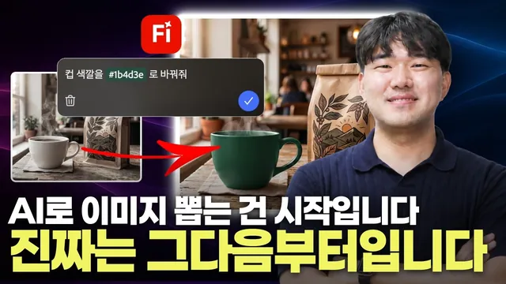

이미지부터 광고 영상까지 전부 한 곳에서 만들어봤습니다 (feat. 어도비 파이어플라이)

원본 영상 보기 →
- 부분 수정으로 90% 완성도를 지켜요
- "어디를(마크업) + 얼마나(디테일 조절)"의 이중 통제권이에요
- 상업적 라이선스 문제를 원천 차단합니다
한 줄 요약
어도비 파이어플라이 하나로 광고 이미지 생성부터 부분 수정, 영상 변환까지 전 과정을 끝내는 실전 워크플로우를 보여 줍니다.
전체 내용 정리
AI 이미지를 광고에 못 쓰는 두 가지 이유
콘텐츠로 수익화하는 분이라면 다 아는 문제죠. AI로 이미지를 뽑는 것 자체는 어렵지 않은데, 그걸 실제 광고에 쓰지 못하는 경우가 많습니다.
첫째, 의도대로 안 나와요. 컵 색이 아쉽거나 배경이 허전해서 프롬프트를 고쳐 다시 돌리면, 마음에 들었던 90%까지 통째로 날아갑니다. 열 번쯤 반복하다 결국 포기하고 처음 이미지를 그냥 쓰는 경우도 많고요.
둘째, 학습 데이터 출처를 몰라요. 클라이언트 광고에 써도 되는지 확신할 수 없습니다. 개인 작업이면 상관없지만 클라이언트 집행 단계에서 막혀요.
프롬프트 작성의 두 가지 기본
첫째, 빛과 구도를 구체적으로 명시하세요. "커피 사진"처럼 두루뭉술하게 쓰면 너무 일반적인 결과가 나옵니다.
브랜드 메인 컬러(딥 그린 같은 구체적 색상값), 조명 조건(따뜻한 자연광, 카페 창가), 소품 배치(원목 테이블, 크래프트 종이 원두 패키지)까지 상세히 적어야 해요.
둘째, 이미지 생성 단계에서는 글자를 넣지 마세요. 로고나 카피는 나중에 실제 폰트로 별도 작업하는 게 실무 기본이고, 이렇게 해야 이후 수정도 훨씬 편합니다.
마크업: 고칠 부분만 정확히 지정해요
파이어플라이에는 마크업(Markup)이라는 기능이 있습니다.
이미지를 저장한 뒤 편집 모드로 들어가 브러시로 고치고 싶은 영역만 정확히 칠하고 프롬프트를 입력하면, 그 영역만 원하는 대로 바뀌어요.
예를 들어 흰색 커피잔을 브랜드 컬러인 딥 그린으로 바꾸고 싶을 때요. 예전 같으면 "컵을 녹색으로 바꿔 줘"라고 전체를 다시 생성해야 했지만, 마크업으로 컵 부분만 칠하고 색상 프롬프트를 넣으면 구도는 그대로 유지한 채 그 부분만 바뀝니다.
같은 방식으로 테이블 위에 로스팅 원두를 추가로 생성하면, 조명과 그림자가 원본과 정확히 맞아떨어져 원래부터 거기 있던 것처럼 자연스럽게 합성돼요.
디테일 조절: 얼마나 바꿀지 정하는 슬라이더
마크업이 "어디를 바꿀지"를 정한다면, 디테일 조절은 "얼마나 바꿀지"를 정하는 기능입니다.
캠페인 전체 무드를 아직 못 정했을 때 유용해요. 원하는 영역을 지정하고 "해질녘 노을빛이 들어오는 조명으로"라는 프롬프트를 넣으면, 왼쪽은 원본에 가깝고 오른쪽으로 갈수록 노을빛으로 점점 변하는 스펙트럼이 생성됩니다. 슬라이더로 그 변화 정도를 세밀하게 조절할 수 있어서 원하는 감도를 딱 맞춰 고를 수 있어요.
참조 이미지로 톤을 통일하기
완성한 컷을 참조 이미지로 넣고 "로스팅 원두 클로즈업, 원목 표면, 얕은 심도" 같은 새 프롬프트를 추가하면, 컵 색깔과 톤앤매너가 일관된 새로운 컷을 만들 수 있습니다. 비율도 정사각형으로 바꿔 SNS용 이미지를 별도로 생성할 수 있고요.
영상: 첫 프레임과 마지막 프레임을 연결해요
파이어플라이 비디오 생성에서는 첫 번째 프레임과 마지막 프레임에 각각 이미지를 넣어 그 사이를 자연스럽게 연결하는 영상을 만들 수 있습니다.
원두 클로즈업 사진을 첫 프레임으로, 무드 있는 브랜드 컷을 마지막 프레임으로 넣고 "카메라가 원두에서 앞으로 부드럽게 이동해 초점이 패키지로 옮겨가고, 김이 모락모락 피어오른다"처럼 구체적인 카메라 무브와 디테일을 프롬프트로 적으면, 광고에서 자주 쓰는 "초점이 제품으로 천천히 넘어가는" 문법의 영상이 완성돼요.
앞서 다듬은 이미지를 그대로 쓰기 때문에 색감과 톤이 영상까지 그대로 유지됩니다.
상업적으로 안전해요
파이어플라이의 어도비 자산 모델은 상업적으로 안전한 데이터로 학습되어, 만든 결과물을 그대로 광고에 집행할 수 있습니다. 협업하거나 에이전시에 다니는 분에게는 이 지점이 특히 중요해요.
핵심 인사이트
- 부분 수정으로 90% 완성도를 지켜요: 마크업 덕분에 전체를 다시 생성하지 않고 문제 되는 부분만 고칠 수 있어서, 반복 생성으로 마음에 들었던 결과물을 잃는 일이 없어집니다.
- "어디를(마크업) + 얼마나(디테일 조절)"의 이중 통제권이에요: 두 기능을 조합하면 원하는 부분을 원하는 강도로 세밀하게 조정할 수 있습니다. AI가 만들어 준 결과를 그대로 쓰는 게 아니라 자기 의도대로 끝까지 끌고 갈 수 있어요.
- 상업적 라이선스 문제를 원천 차단합니다: 어도비 자산 모델이 상업적으로 안전한 데이터로 학습됐기 때문에, 클라이언트 광고 집행 전에 저작권 문제로 막히는 일이 없어요.
오늘 당장 해볼 것
- 어도비 파이어플라이에서 무료 계정을 만들고, 빛과 구도를 구체적으로 명시한 프롬프트로 이미지 한 장을 생성해 보세요. "따뜻한 자연광이 들어오는 카페 창가, 원목 테이블 위 흰색 세라믹 잔, 글자 없음" 같은 식으로요.
- 생성된 이미지를 저장한 뒤 편집 모드의 마크업 기능으로 특정 부분만 브러시로 칠해 수정해 보세요. 제품 색상이나 소품 추가 같은 걸로요.
- 완성한 이미지 두 장을 첫 프레임과 마지막 프레임으로 넣어 5~10초짜리 짧은 광고 클립을 만들어 보세요.